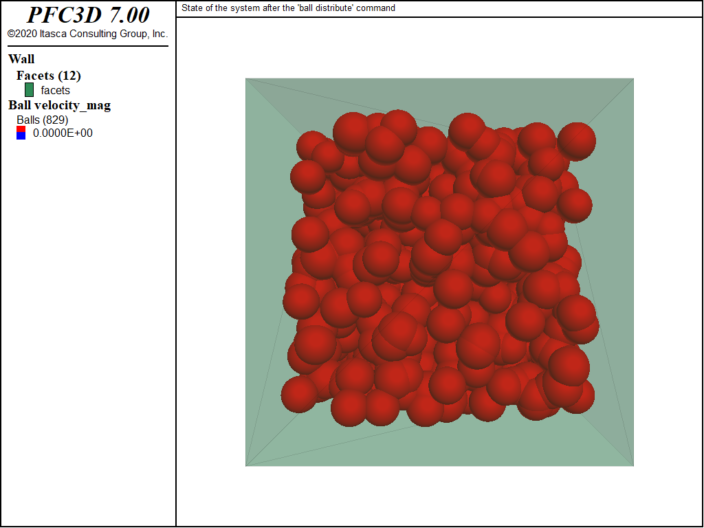
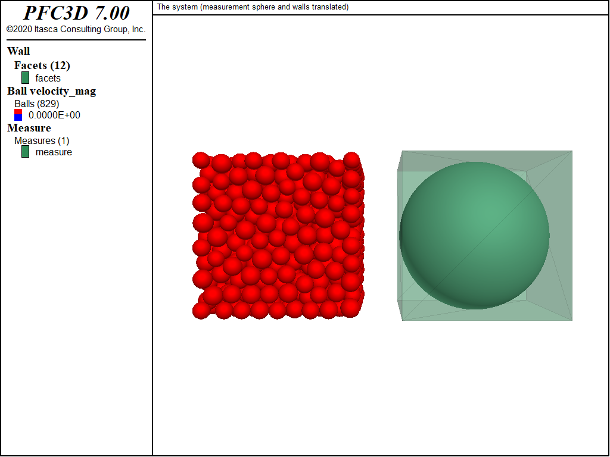
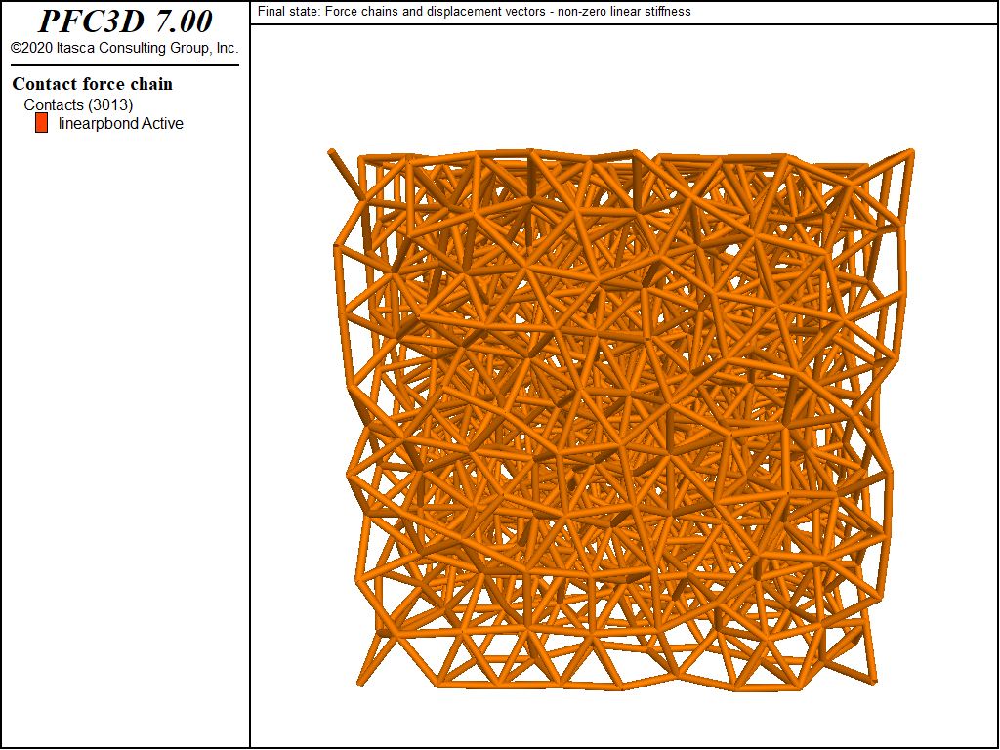
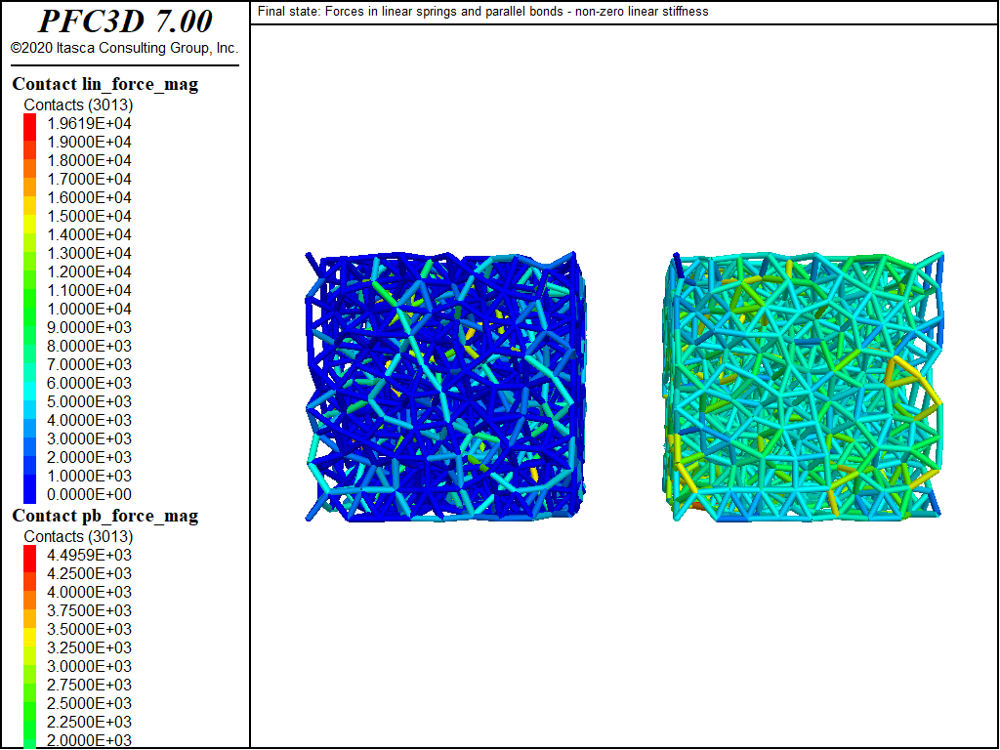
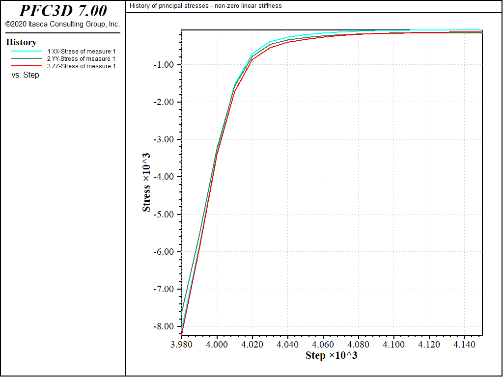
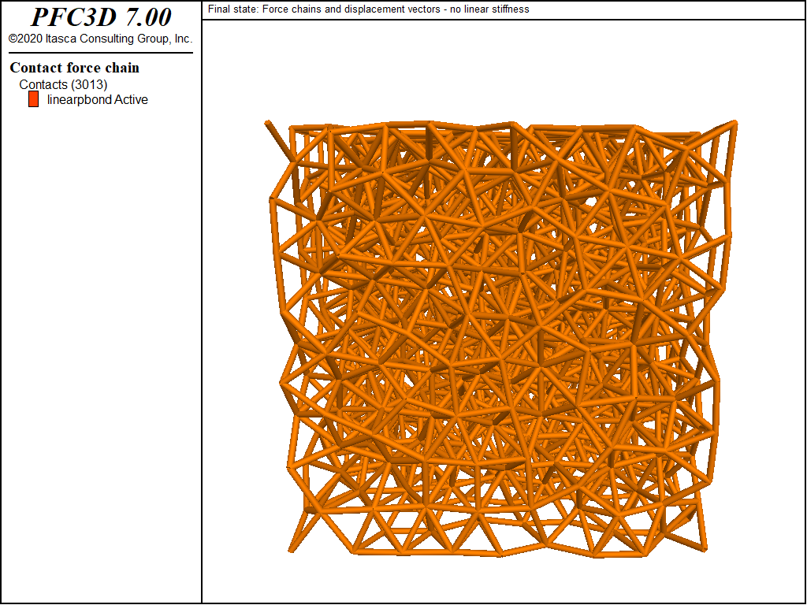
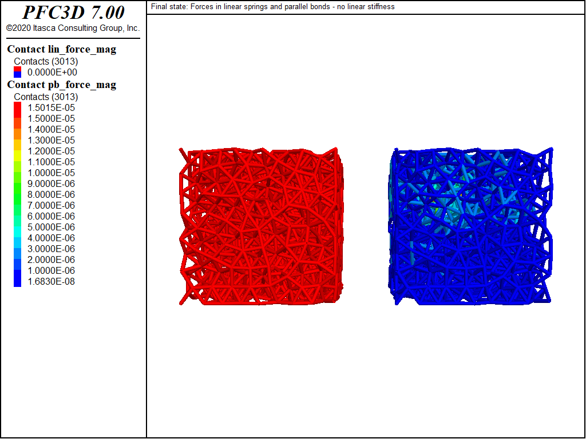
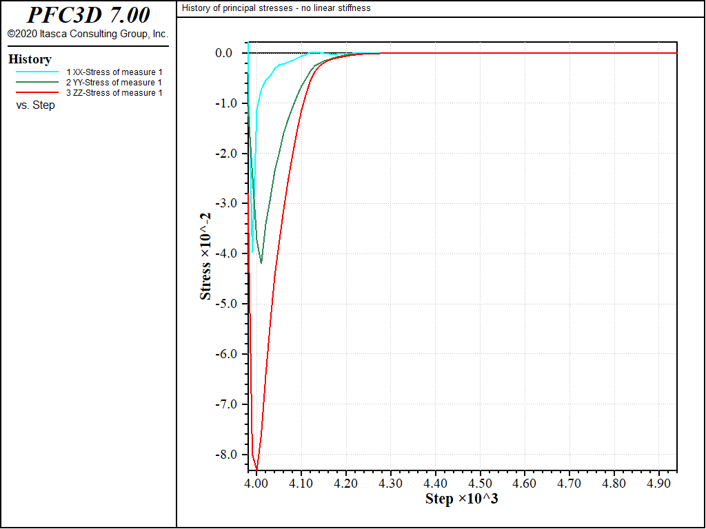
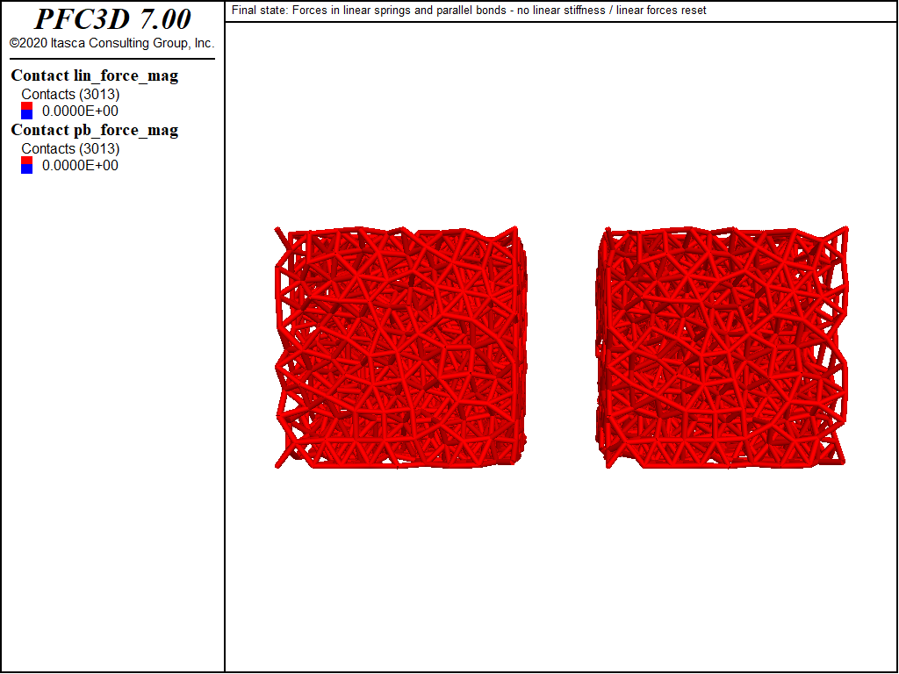

生成黏结颗粒集合体
引言
注意
本算例的项目文件可在 PFC 中查看或运行。[1]所用的数据文件（data files）列于本算例末尾。
PFC 能够借助接触模型再现固体材料中观察到的许多行为，这些接触模型允许在接触处生成黏结。黏结在概念上代表部件（piece）之间能够承受荷载直至规定极限的材料，这些部件即球颗粒、子颗粒和墙面片。如果施加的应力低于该阈值，材料的表现可能类似于固体的连续体近似。一旦局部强度极限被超过，黏结就会断裂，相邻部件便可像处于无黏结状态一样自由运动。例如，局部可能发生摩擦滑移，从而模拟裂隙的萌生与扩展。宏观响应可以与类似的室内试验进行定量比较，从而对合成材料进行校准。黏结颗粒建模方法在 [Potyondy2015a] 中有详尽论述。
本教程使用 线性平行黏结模型（linear parallel bond model） 创建一个简单材料。直接指定接触特性，并使试样达到平衡。
数值模型
任何 PFC 模型的第一步都是选择模拟域（domain）的尺寸。按照定义，域（domain）是一个轴对齐的盒子，所有模型组件都位于其中。此命令将域范围设置为一个立方体盒子，其边长为 20.0 个单位，且以模型原点（始终位于 (0.0,0.0,0.0)）为中心。这是通过仅指定 x 方向的范围边界来实现的。如果未指定 y 和/或 z 方向的范围边界，则采用前一方向的范围边界。
model domain extent -10 10
下一步是使用 接触模型分配表（CMAT）（Contact Model Assignment Table (CMAT)） 显式指定默认接触模型。这是 PFC 建模过程中一个重要且必需的步骤。在本模型中，将出现两种类型的接触：球-球接触和球-面片接触。对于球-面片接触，我们将使用 线性接触模型（linear contact model）。为了生成黏结试样，我们将对球-球接触使用 线性平行黏结模型（linear parallel bond model）。另请注意 proximity 关键字的使用；它确保只要部件的表面位于指定的间隙之内，就会在它们之间创建接触。
contact cmat default model linear property kn 5e6
contact cmat default type ball-ball model linearpbond ...
property kn 5e6 proximity 0.1
上述命令并未专门提及球-面片接触。实际上，通过省略 type 关键字，接触模型分配表（CMAT） 中的所有默认条目首先被修改为使用 线性接触模型（linear contact model）。只有球-球接触条目被修改为使用 线性平行黏结模型（linear parallel bond model）（详见 contact cmat default 命令说明）。
必须对生成的球颗粒加以约束，才能将它们黏结起来。容纳球颗粒的材料容器是使用 wall generate 命令生成的封闭盒子。
wall generate box -5 5 one-wall
使用 ball distribute 命令创建一组球颗粒。正如 球体（ball） 一节所述，此命令通过在指定盒子中随机生成球颗粒而不考虑重叠，来匹配目标孔隙率。为防止球颗粒从材料容器中逸出，球颗粒被布置在比材料容器稍小的盒子中。此外，指定的孔隙率被略微调低，以便在随后的平衡过程中达到所需的孔隙率。使用 设置随机数种子命令（model random） 命令指定随机数发生器的状态，从而可以多次创建完全相同的球颗粒分布。
model random 10001
ball distribute porosity 0.2 radius 0.5 0.6 box -4.5 4.5
图 1（Figure 1） 显示了发出此命令后系统的状态，其中包括存在的较大重叠。


图 1：发出 ball distribute 命令后系统的状态。请注意存在的较大重叠。
使用 ball attribute 命令设置球颗粒密度和局部阻尼系数。正如“属性和特性（Attributes and Properties）”教程中所述，密度和局部阻尼系数是属性（而不是特性）。随后将系统求解至平衡判据，以获得密实堆积。
ball attribute density 1000.0 damp 0.7
model cycle 2000 calm 50
model mechanical timestep scale
model solve ratio-average 1e-3
model mechanical timestep auto
model calm
请注意，球颗粒密度是必需属性，因为非零值对于 PFC 正确求解运动方程并计算时步至关重要。在本模拟中设置局部阻尼系数，是为了有效从系统中移除动能，因为我们关注的是最终构型。给出 执行计算时步（model cycle） 命令时使用了 calm 关键字，以周期性地将全部球颗粒的平动/转动速度置零，从而有效从系统中移除动能。这使球颗粒能够在不产生显著重叠、也不产生显著运动的情况下重新排列，从而相对快速地获得密实堆积。使用密度缩放以快速达到平衡，并以目标平均力比限值发出 求解模型（model solve） 命令。这些步骤以最少的计算量确保了密实堆积。
为进一步分析，创建了一个测量球，并设置了历史监测，以记录集合体内对角应力的演化。
measure create id 1 radius 5.0
measure history name '1' stress-xx id 1
measure history name '2' stress-yy id 1
measure history name '3' stress-zz id 1
图 2（Figure 2） 显示了此阶段的系统。图中绘制了球颗粒、墙体和测量球（为便于查看，后两者已平移）。测量球按计算得到的孔隙率值着色。


图 2：移除墙体之前系统的初始状态。在此视图中，为便于查看，墙体和测量 球已平移。
既然球颗粒密实集合体已达到平衡，下一阶段就是在系统中安装平行黏结。这分两步完成：(1) 发出 contact method 命令，采用与上述 CMAT 槽位设置一致的间隙对接触进行黏结；以及 (2) 发出 contact property 命令，设置黏结的弹性和强度性质。
contact method bond gap 0.1
contact property pb_kn 1e6 pb_ks 1e6 pb_ten 1e6 pb_coh 1e6 pb_fa 30.0
至此初始状态构建完毕。随后重置位移并保存模型状态。
ball attribute displacement multiply 0.0
model save 'initial'
解除围压
至此，已生成一种平行黏结材料。现在我们通过删除墙体来改变模型，并将系统求解至目标平衡判据。请注意，在球-球接触处，线性弹簧与平行黏结同时存在。
wall delete
model cycle 1
model solve ratio-average 1e-3
model save 'final1'
图 3（Figure 3） 显示了系统中的球颗粒位移向量和力链。在 linear 公式中，法向力默认由模型各分量之间的绝对重叠量产生。因此，在有墙体存在的条件下，线性弹簧处于受压状态。另一方面，带平行黏结（parallel bonds）的接触对法向力采用增量公式。于是，平行黏结会抵抗所施加的力，以力图恢复到其插入时的构型。当线性弹簧与平行黏结同时存在且墙体被移除时，部分荷载会转移到使平行黏结受拉伸上。


图 3：移除墙体并采用线性刚度求解后的最终状态。图中给出力链与球颗粒 位移。
图 4（Figure 4） 给出了线性弹簧中以及接触中的力，而 图 5（Figure 5） 给出了集合体内应力的演化。


图 4：移除墙体并采用线性刚度求解后的最终状态。线性弹簧中的力（左） 与平行黏结中的力（右，为便于查看已平移）。


图 5：由测量球计算得到的集合体内主应力时程，其中线性 刚度非零。
前面的模拟同时涉及线性刚度和平行黏结刚度。接下来我们重复该模拟，但将线性刚度设为 0.0。这样就不应存在因球颗粒相互重叠而产生的力，模型应处于平衡状态。但请注意，由于先前累积在球颗粒上的力在第一个循环中起作用，会出现轻微扰动（图 6 至图 8）。
model restore 'initial'
wall delete
contact property kn 0.0
model cycle 1
model solve ratio-average 1e-3
model save 'final2'


图 6：移除墙体并在无线性刚度条件下求解后的最终状态。图中给出力链与球颗粒 位移。


图 7：移除墙体并在无线性刚度条件下求解后的最终状态。线性弹簧中的力（左） 与平行黏结中的力（右）。


图 8：由测量球计算得到的集合体内主应力时程，无线性刚度。
为消除这一扰动，必须重置在前一次力-位移计算循环中累积到物体上的接触力（可能还包括接触力矩）。为保持一致，下面的代码行还重置了线性平行黏结接触模型的 线性力（lin_force） 属性（尽管该步骤并非必需）。
model restore 'initial'
wall delete
contact property kn 0.0 lin_force 0.0 0.0 0.0
ball attribute force-contact multiply 0.0 moment-contact multiply 0.0
model cycle 1
model solve ratio-average 1e-3
model save 'final3'


图 9：移除墙体、在无线性刚度条件下求解并重置累积接触力后的最终状态。线性弹簧中的力（左） 与平行黏结中的力（右）均为零。
讨论
本示例介绍了构建简单平行黏结材料的步骤，以及线性弹簧刚度对无侧限阶段的影响，并图示了最终状态。这是一个基础性示例，用于演示使用 PFC 进行黏结颗粒建模的机理，并突出了其中一些重要特性。要创建能代表真实材料的有意义试样，还需要许多额外步骤（例如，控制初始状态的组构、标定材料属性和接触属性等）。这些额外步骤的支持由 材料建模支持（material-modeling support） 软件包提供。
参考文献
| [Potyondy2015a] | Potyondy, D. O.，“黏结颗粒模型作为岩石力学研究与应用的工具：当前趋势与未来方向”（The Bonded-Particle Model as a Tool for Rock Mechanics Research and Application: Current Trends and Future Directions），Geosystem Engineering，18(1)，第 1–28 页（2015），DOI:10.1080/12269328.2014.998346。 |
数据文件
cmlinearpbond_simple.dat (3D)
; 文件名：cmlinearpbond_simpledat (3D)
;
; 演练线性平行黏结接触模型
;=========================================================================
model new
model large-strain on
model title 'Generating a bonded assembly (Linear Parallel-Bond contact model)'
; 设置域范围。
; excerpt-oiyv-start
model domain extent -10 10
; excerpt-oiyv-end
; 修改接触模型分配表的默认槽位。
; 这里对所有接触类型选用线性接触模型 (kn=1e6)，但
; 球-球接触除外，对其指定 linearpbond 模型。
; 注意，仅激活了 linearpbond 模型的线性部分，
; 因此该模型的表现将与线性模型完全一致。
; excerpt-xwsu-start
contact cmat default model linear property kn 5e6
contact cmat default type ball-ball model linearpbond ...
property kn 5e6 proximity 0.1
; excerpt-xwsu-end
; 生成一个盒子
; excerpt-gavv-start
wall generate box -5 5 one-wall
; excerpt-gavv-end
; 在盒子中分布球。
; 伪随机数生成器的种子已固定，从而确保
; 每次执行该文件时都会产生相同的初始构型。
; 另请注意，用 'ball distribute' 命令指定的盒子范围
; 小于上面生成的箱体墙。这样做是为了避免球
; 从材料容器中逸出。因此，用 'ball distribute' 命令
; 指定的孔隙率被调低，以便在平衡后获得所需的
; 孔隙率。
;
; excerpt-fvvo-start
model random 10001
ball distribute porosity 0.2 radius 0.5 0.6 box -4.5 4.5
; excerpt-fvvo-end
model save 'balls'
; 设置球属性。
; excerpt-unoa-start
ball attribute density 1000.0 damp 0.7
; excerpt-unoa-end
; 使系统平静。
; 由于上面使用了 "ball distribute" 命令，球在生成时
; 未考虑重叠。
; excerpt-tdiw-start
model cycle 2000 calm 50
; excerpt-tdiw-end
; 将系统求解至目标限值（此处为平均力比）。
; 为更快达到稳定构型，启用了密度缩放。
; excerpt-vluc-start
model mechanical timestep scale
model solve ratio-average 1e-3
model mechanical timestep auto
model calm
; excerpt-vluc-end
; 安装测量球以监测
; 试样内部的应力。同时重置球位移。
; excerpt-gpnu-start
measure create id 1 radius 5.0
measure history name '1' stress-xx id 1
measure history name '2' stress-yy id 1
measure history name '3' stress-zz id 1
; excerpt-gpnu-end
; 安装平行黏结 - 只有采用 linearpbond 模型的接触会受影响。
; excerpt-exdr-start
contact method bond gap 0.1
contact property pb_kn 1e6 pb_ks 1e6 pb_ten 1e6 pb_coh 1e6 pb_fa 30.0
; excerpt-exdr-end
; 重置球位移并保存初始状态。
; excerpt-kien-start
ball attribute displacement multiply 0.0
model save 'initial'
; excerpt-kien-end
; 删除墙并求解至目标平均力比。
; excerpt-lqsl-start
wall delete
model cycle 1
model solve ratio-average 1e-3
model save 'final1'
; excerpt-lqsl-end
; 重复该模拟，但将线性刚度设为 0.0。
; 注意，上一时步计算出的接触力已
; 累积到相接触的球上 - 因此会出现轻微的
; 平衡偏离。
; excerpt-vkrg-start
model restore 'initial'
wall delete
contact property kn 0.0
model cycle 1
model solve ratio-average 1e-3
model save 'final2'
; excerpt-vkrg-end
; 重复该模拟，但将线性刚度设为 0.0，
; 并强制重置线性接触力。所有球均被固定，
; 系统循环 1 步，以重置线性力。
; excerpt-stqj-start
model restore 'initial'
wall delete
contact property kn 0.0 lin_force 0.0 0.0 0.0
ball attribute force-contact multiply 0.0 moment-contact multiply 0.0
model cycle 1
model solve ratio-average 1e-3
model save 'final3'
; excerpt-stqj-end
program return
;========================================================================
; 文件结束：cmlinearpbond_simple.dat (3D)
尾注
| [1] | 要在 PFC 中查看本项目，请使用程序菜单。
⮡ PFC |
| 这些内容对您有帮助吗？… | FLAC3D © 2019, Itasca | 原文更新于 2020 年 10 月 8 日 |
| 版权与免责声明 | ||